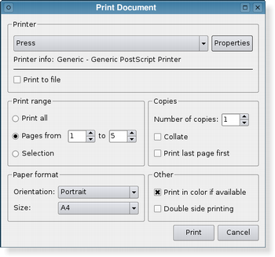

QPrintDialog Class
The QPrintDialog class provides a dialog for specifying the printer's configuration. More...
| Header: | #include <QPrintDialog> |
| CMake: | find_package(Qt6 REQUIRED COMPONENTS PrintSupport) target_link_libraries(mytarget PRIVATE Qt6::PrintSupport) |
| qmake: | QT += printsupport |
| Inherits: | QAbstractPrintDialog |
- List of all members, including inherited members
- QPrintDialog is part of Standard Dialogs and Printer and Printing APIs.
Properties
- options : PrintDialogOptions
Public Functions
| QPrintDialog(QPrinter *printer, QWidget *parent = nullptr) | |
| QPrintDialog(QWidget *parent = nullptr) | |
| virtual | ~QPrintDialog() |
| void | open(QObject *receiver, const char *member) |
| QAbstractPrintDialog::PrintDialogOptions | options() const |
| QPrinter * | printer() |
| void | setOption(QAbstractPrintDialog::PrintDialogOption option, bool on = true) |
| void | setOptions(QAbstractPrintDialog::PrintDialogOptions options) |
| bool | testOption(QAbstractPrintDialog::PrintDialogOption option) const |
Reimplemented Public Functions
| virtual void | done(int result) override |
| virtual int | exec() override |
| virtual void | setVisible(bool visible) override |
Signals
| void | accepted(QPrinter *printer) |
Detailed Description
The dialog allows users to change document-related settings, such as the paper size and orientation, type of print (color or grayscale), range of pages, and number of copies to print.
Controls are also provided to enable users to choose from the printers available, including any configured network printers.
Typically, QPrintDialog objects are constructed with a QPrinter object, and executed using the exec() function.
QPrintDialog printDialog(printer, parent); if (printDialog.exec() == QDialog::Accepted) { // print ... }
If the dialog is accepted by the user, the QPrinter object is correctly configured for printing.
|  |  |
The printer dialog (shown above in Plastique style) enables access to common printing properties. On X11 platforms that use the CUPS printing system, the settings for each available printer can be modified via the dialog's Properties push button.
On Windows and macOS, the native print dialog is used, which means that some QWidget and QDialog properties set on the dialog won't be respected. The native print dialog on macOS does not support setting printer options, i.e. setOptions() and setOption() have no effect.
In Qt 4.4, it was possible to use the static functions to show a sheet on macOS. This is no longer supported in Qt 4.5. If you want this functionality, use QPrintDialog::open().
See also QPageSetupDialog and QPrinter.
Property Documentation
options : PrintDialogOptions
This property holds the various options that affect the look and feel of the dialog
By default, all options are disabled.
Options should be set before showing the dialog. Setting them while the dialog is visible is not guaranteed to have an immediate effect on the dialog (depending on the option and on the platform).
Access functions:
| QAbstractPrintDialog::PrintDialogOptions | options() const |
| void | setOptions(QAbstractPrintDialog::PrintDialogOptions options) |
See also setOption() and testOption().
Member Function Documentation
[explicit] QPrintDialog::QPrintDialog(QPrinter *printer, QWidget *parent = nullptr)
Constructs a new modal printer dialog for the given printer with the given parent.
[explicit] QPrintDialog::QPrintDialog(QWidget *parent = nullptr)
Constructs a print dialog with the given parent.
[virtual noexcept] QPrintDialog::~QPrintDialog()
Destroys the print dialog.
[signal] void QPrintDialog::accepted(QPrinter *printer)
This signal is emitted when the user accepts the values set in the print dialog. The printer parameter includes the printer that the settings were applied to.
[override virtual] void QPrintDialog::done(int result)
Reimplements: QDialog::done(int r).
Closes the dialog and sets its result code to result. If this dialog is shown with exec(), done() causes the local event loop to finish, and exec() to return result.
Note: This function does not apply to the Native Print Dialog on the Mac macOS and Windows platforms, because the dialog is required to be modal and only the user can close it.
See also QDialog::done().
[override virtual] int QPrintDialog::exec()
Reimplements: QDialog::exec().
void QPrintDialog::open(QObject *receiver, const char *member)
This is an overloaded function.
Opens the dialog and connects its accepted() signal to the slot specified by receiver and member.
The signal will be disconnected from the slot when the dialog is closed.
QPrinter *QPrintDialog::printer()
Returns the printer that this printer dialog operates on. This can be useful when using the QPrintDialog::open() method.
void QPrintDialog::setOption(QAbstractPrintDialog::PrintDialogOption option, bool on = true)
Sets the given option to be enabled if on is true; otherwise, clears the given option.
See also options and testOption().
[override virtual] void QPrintDialog::setVisible(bool visible)
Reimplements: QDialog::setVisible(bool visible).
bool QPrintDialog::testOption(QAbstractPrintDialog::PrintDialogOption option) const
Returns true if the given option is enabled; otherwise, returns false.